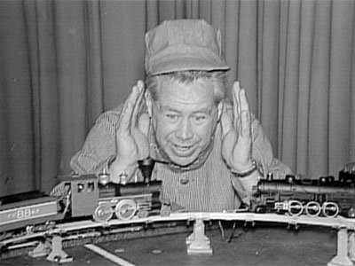
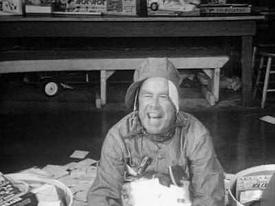
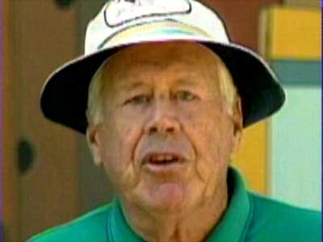

|
|
L O C A L P R O G R A M S |
Uncle Charlie's Roundhouse
April
27,
1959 - July 1962- ?

| Charlie LaFranchise, a transplant from KLOR, hosted two children's show in the early 1960s. |

From
an
on-air
promo,
Uncle
Charlie
sits
in
a
pile
of
fan
mail
to
remind
kids
to
tune
in
every
morning.

Uncle
Charlie
made
a
guest
appearance
at
"Ramblin'
Rod's
25th
Anniversary"
at
Oaks
Park
in
1989.
| Uncle Charlie's Roundhouse BROADCAST HISTORY |
| APR
1959-MAY
1959:
MON-FRI
8:30AM-9:00AM MAY 1959: MON-FRI 8:45AM-9:15AM MAY 1959 - SEP 1959: MON-FRI 8:45AM-9:30AM OCT 1959 - : MON-FRI 8:00AM-8:30AM DEC 1959 - APR 1960 - : MON-FRI 8:00AM-9:00AM JUL 1960 - DEC 1960: MON-FRI 8:00AM-9:00AM DEC 1960: WED-FRI 8:00AM-9:00AM JAN 1961 - SEP 1961: MON-FRI 8:00AM-9:00AM SEP 1961 - MAY 1962 : MON-FRI 7:30AM-8:30AM MAY 1962 - JUL 1962 : MON-FRI 8:00AM-8:30AM |


This page last updated on August 16, 2025
|
Yesterday's KPTV Website design and content ©2003-2025 by Ron Dunevant, LLC unless otherwise noted. |